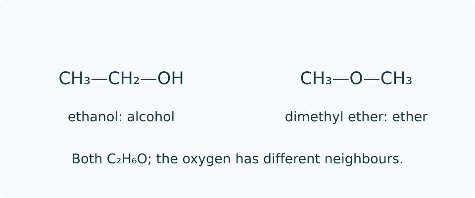
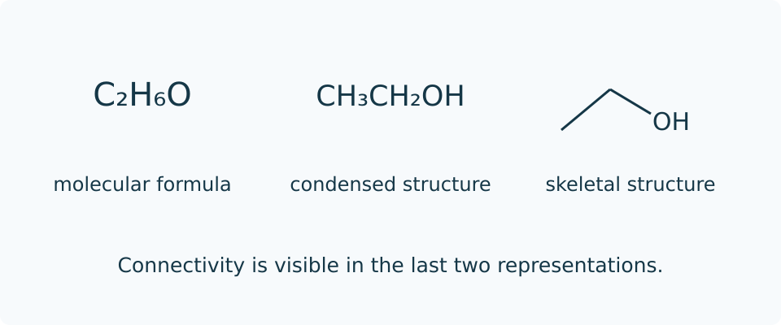
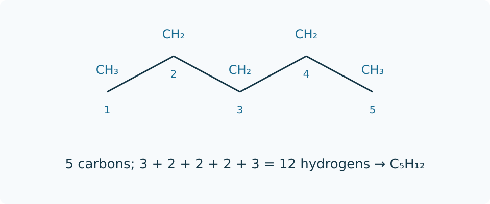
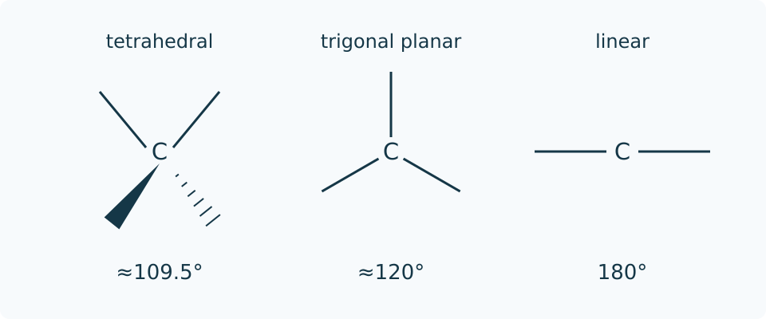
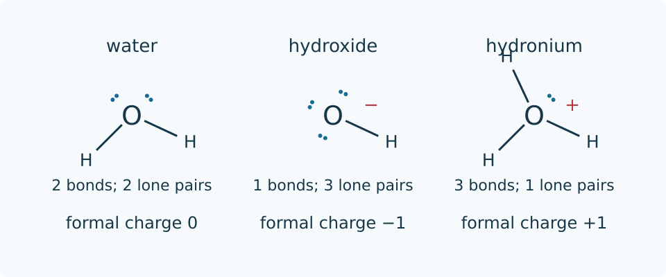

Two bottles are both labelled C₂H₆O. One is the alcohol in beer and boils at 78 °C. The other is a spray-can propellant that boils at −24 °C. Same atoms, different molecules. Only the structure tells them apart.
Today we learn to read structures fluently:
Drawings: formula, condensed and skeletal, and what each one hides
Hidden atoms: every corner is a carbon; valence implies the H
Functional groups: the local patterns that decide behaviour
Formal charge: an electron count that keeps a drawing honest
Names and amounts: basic naming, and grams to moles
The rest of the course assumes you can read a structure at a glance.
One formula, two molecules

Ethanol and dimethyl ether are constitutional isomers
ethanol
dimethyl ether
oxygen is bonded to
C and H
C and C
boiling point
78 °C
−24 °C
Three ways to write the same molecule

Ethanol as molecular formula, condensed structure and skeletal structure
Molecular formula C₂H₆O tells you what is there. It’s good for mass and amount, but useless for identity.
Condensed CH₃CH₂OH tells you the connectivity in a single line of text.
Skeletal is the drawing chemists actually use. It’s fast, and it puts the functional groups up front.
Skeletal structures hide most of the atoms

Pentane as a zigzag with CH3 and CH2 labels revealed
Rules: every end and corner is a carbon. Hydrogens on carbon are not drawn: add enough to give each carbon four bonds. Heteroatoms (O, N, …) and the H on them are drawn.
Try it: how many carbons are in an unbranched zigzag with four line segments?
Five. Segments are bonds, not atoms. The molecule is pentane, C₅H₁₂.
Branches and rings: same counting rule
drawing
carbons
formula
butane (straight)
4
C₄H₁₀
2-methylpropane (branched)
4
C₄H₁₀
cyclobutane (ring)
4
C₄H₈
A branch point is a carbon with three or four carbon neighbours, so it carries fewer H.
Butane and 2-methylpropane are isomers again: same formula, different connectivity.
Closing a ring uses one more C–C bond, so it costs two H.
Try it: in 2-methylpropane, how many H are on the central carbon?
One. It has three carbon neighbours, so 4 − 3 = 1 H. The three CH₃ ends supply the other nine.
Double and triple bonds change the hydrogen count
Ethane, ethene and ethyne with their formulas
A neutral carbon has a bond-order sum of four, not four neighbours. Each extra bond between two carbons removes one H from each.
Try it: start from butane, C₄H₁₀, and put in one C=C. What’s the formula?
C₄H₈. Each end of the new double bond loses one H.
Bonding sets the shape

Tetrahedral, trigonal planar and linear carbon
carbon type
example
shape
angle
four single bonds
ethane, CH₃ groups
tetrahedral
109.5°
one double bond
ethene, C=O carbon
trigonal planar
120°
one triple bond
ethyne
linear
180°
Functional groups: the parts that react
family
pattern
you have met it as
alcohol
R–OH
ethanol, cholesterol
amine
R–NH₂
the fishy smell of trimethylamine
ether
R–O–R′
the anaesthetic diethyl ether
aldehyde
R–C(=O)H
vanillin, the smell of vanilla
carboxylic acid
R–C(=O)OH
acetic acid in vinegar
ester
R–C(=O)OR′
isoamyl acetate, the smell of bananas
A functional group is identified by its local connectivity, not just by which elements are present.
Reading around a carbonyl
Acetic acid with its carbonyl and hydroxyl oxygen marked
Look at the neighbour of C=O: if it’s H you have an aldehyde, C a ketone, OH an acid, OR an ester, and N an amide. An OH or OR with no C=O next to it is an alcohol or ether.
Try it: is CH₃C(=O)NH₂ an amine or an amide?
Amide. The N sits directly on the carbonyl carbon, which makes it much less basic than an amine. That difference comes back in Week 4.
Formal charge: count the electrons each atom owns

Water, hydroxide and hydronium with bonds, lone pairs and charges